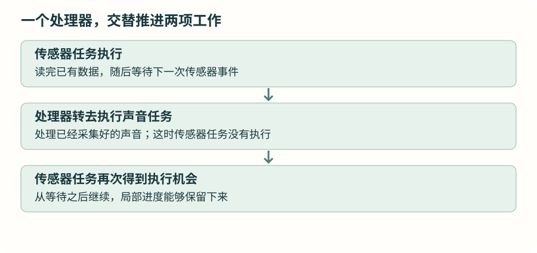

从函数调用到多任务：先补上这几步
已经会写函数、指针和主循环，还需要认识“把函数交给别人调用”和“几个执行流程交替推进”。这一篇先用普通 C 程序看清它们，再进入 FreeRTOS。
1 · 一个函数不返回，后面的函数怎么办？
上一章把传感器、声音、屏幕和通信放进一个主循环。每项工作处理一点就返回，主循环才能接着处理下一项。先看已经用过的两次普通调用：
沿用前章接口 · 先处理通信，再推进应用和界面
ble_uart_process();
app_tick();处理器进入第一个函数，执行结束后回到调用位置，才进入第二个。假如把第一个函数改成一直等待下一条通信消息的循环，它始终不返回，屏幕更新就没有机会执行。把两个无限循环依次写进 main()，也不能让它们轮流运行。
裸机主循环可以做好这件事；随着等待条件、处理周期增加，就要自己保存更多“做到哪里了”的状态。接下来希望几项工作能各自保留执行进度，由一个公共调度程序安排谁继续。
2 · 任务、线程、并发、并行分别指什么？
一个可以被暂停、以后再继续的执行流程，通常叫线程。FreeRTOS 把这样的执行单位称为任务。本章统一使用“任务”，它不是每次从头调用一次的小函数。
比如传感器任务执行到“等待新数据”时暂停，声音任务运行一会儿；传感器条件满足后，再从等待的后面继续。
普通函数调用也需要保存进度：调用另一个函数后，要记住返回到哪里；函数还可能有尚未用完的局部变量。这类内容常放在一块按调用过程使用的存储空间中，叫栈。几个任务都可能停在自己的函数调用中，所以每个任务需要自己的栈，系统还要记录它下一步执行到哪里。任务切换的具体过程放在调度篇。

并发表示几件工作在同一段时间内交替推进；并行表示同一时刻确实有几件工作在执行。手表主控只有一个处理器核心，本章讨论的是任务并发。外设和 DMA 可以在处理器执行其他代码时继续工作，这是已经学过的硬件协作。
“实时”关注工作能否在要求的时间内得到处理。例如声音缓冲被下一批数据覆盖前，程序必须及时接走数据。换用 FreeRTOS 后，这个时间要求仍然存在，算法也不会自动算得更快。
3 · 函数名后面，为什么有时不写括号？
普通调用 show_number(&value) 的意思是“现在执行”。有时需要先告诉另一个函数“以后请执行这段代码”，于是要传递函数的地址。函数指针就是用来保存、传递这个地址的变量。
完整 C 程序 · 可在电脑上编译运行，输出 25
#include <stdint.h>
#include <stdio.h>
static void show_number(void *argument)
{
uint32_t *number = argument;
printf("%lu\n", (unsigned long)*number);
}
int main(void)
{
uint32_t value = 25;
void (*function)(void *) = show_number;
function(&value);
return 0;
}先读 show_number：它不返回结果，接收一个 void * 参数。void * 可以保存对象的地址，但没有说明对象是什么类型，所以函数中先把它赋给 uint32_t *，再通过 *number 访问那个整数。这样做的前提是调用者确实传进了有效的 uint32_t 对象地址。
再拆开声明 void (*function)(void *)：function 是变量名；(*function) 表示它是指针；最前面的 void 表示目标函数没有返回值；最后的 (void *) 表示目标函数接收什么参数。括号不能随便去掉，void *function(void *) 会变成“返回指针的函数声明”。
= show_number 保存函数地址，此时没有调用它。最后的 function(&value) 才通过指针执行它。这里函数指针仍然只是普通 C 语言工具，并没有创建任务或发生任务切换。
4 · 创建任务，为什么也要传入一个函数？
调度器需要知道任务从哪里开始执行，所以创建任务时传入任务入口函数。入口形式可以先这样读：
入口结构示意 · 此处尚未创建任务，不能直接作为忙循环实验
static void SensorTask(void *argument)
{
(void)argument;
for (;;) {
/* 处理工作，再等待下一次条件。 */
}
}入口函数返回 void，接收 void *。参数让同一段任务代码可以接收不同的初始数据；暂时用不上时传 NULL，函数中的 (void)argument 只是表示有意不使用参数。
任务入口不应直接返回。长期运行的任务通常留在自己的循环中，在循环里等待时间或事件；需要结束的任务，应调用系统提供的删除任务接口。具体调用在下一篇出现。
创建任务还需要分配栈、记录优先级，并把任务加入调度管理。不是把普通函数地址存起来，就自动拥有了多任务。
5 · 地址传过去之后，数据还存在吗？
上面的完整 C 程序中，value 一直存在到 main() 结束，函数又立即使用它，所以地址有效。但是任务可能很久以后才开始读取参数。如果初始化函数创建一个局部变量，把它的地址传给任务，随后初始化函数返回，这个地址就不能再当作有效参数使用。
参数存储示意 · 下一篇再介绍创建接口
static uint32_t interval_ms = 500;
/* 下一篇创建任务时，可把 &interval_ms 作为参数。
static 让对象在整个程序运行期间存在。 */任务有独立栈，并不代表所有数据都各自独有：文件级变量、静态变量、同一个外设、传入的同一个对象地址，都可能被多处访问。后面会用具体交错过程解释怎样保护它们。
回想中断回调：HAL 在硬件事件发生后调用我们提供的函数；任务入口则由调度器安排执行。二者都可能涉及函数指针，但中断回调处于中断执行环境，任务入口处于任务执行环境，能使用的接口不同。
为什么普通无限循环会挡住后面的调用；函数地址和函数调用有什么区别；为什么任务参数指向的数据要持续有效。下一篇再把这些知识放进真正的任务创建代码。
资料与源码
本章按仓库当前 FreeRTOS V11.2.0 与 STM32U5 端口核对接口。图解描述执行关系，任务耗时和硬件行为需在实际工程观察。